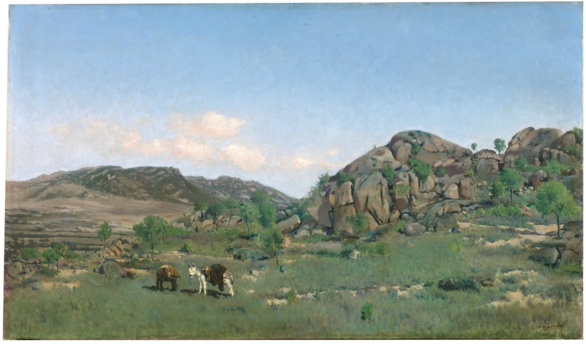

Аурелиано де Беруэте
Paisaje de Torrelodones (Пейзаж Торрелодонес), 1891

Холст, масло, 46,5 x 79,5 см
Национальный музей Прадо, Мадрид.
Пожертвование de María Teresa Moret и передача Museo de Arte Moderno, 1922 г.

Холст, масло, 46,5 x 79,5 см
Национальный музей Прадо, Мадрид.
Пожертвование de María Teresa Moret и передача Museo de Arte Moderno, 1922 г.